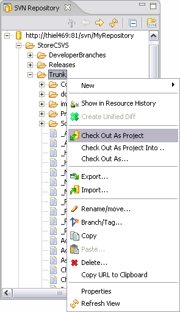

Check out is the term used to describe the process of making a copy of a project from a repository into your local workspace. In SVN, the check out process creates a working copy. A working copy is a specially formatted folder structure which contains additional .svn folders that store SVN information, as well as a pristine copy of each item that is checked out.
Navigate to the SVN Repository Exploring Perspective. If you have not already defined a connection to your repository, you will need to add a new repository location.
Once you have defined a repository location, click on it to expand the location and navigate the contents of your repository.
Locate the folder containing the project that you want to check out and then right click on the project to bring up the context menu.

If the project in your repository already contains an Eclipse .project file as well as any other Eclipse-specific files that are needed, such as the .classpath file used by Java projects, then you would want to use the option. This option will create an Eclipse project in your active workspace, based on the files in the repository. Since your repository already contains all of the required files, you should be all ready to start working once the checkout is complete.
This option works exactly as desctribed in the Check Out as Project option except that it allows you to select a target directory for the working copy that is outside your active Eclipse workspace.
If your repository does not contain an Eclipse .project file, then you will want to use the option. This option will run the Eclipse new project wizard and lets you establish a name for your project as well as the Eclipse project type.
The Eclipse new project wizard creates the folder for your project as well as any special files that are needed for that project type, such as the .project and .classpath files, as well as any folders you may have told it to create. SVN may have to delete some of those files and folders before it can check out your project and the SVN checkout process will abort if it encounters a file or folder that already exists. When SVN sees that these extra files exist, it issues a warning message before it deletes anything. If you receive this warning message, and you want to preserve the local version of any of these files, you can copy any files out of the folder in your workspace (using your operating system's file explorer) and then copy them back after the checkout is complete; all before answering the message. In the long term, the best option is to then commit all of those special project files so that the next person can just use the option.
Reference
SVN Repository Exploring Perspective
Creating a Repository Location